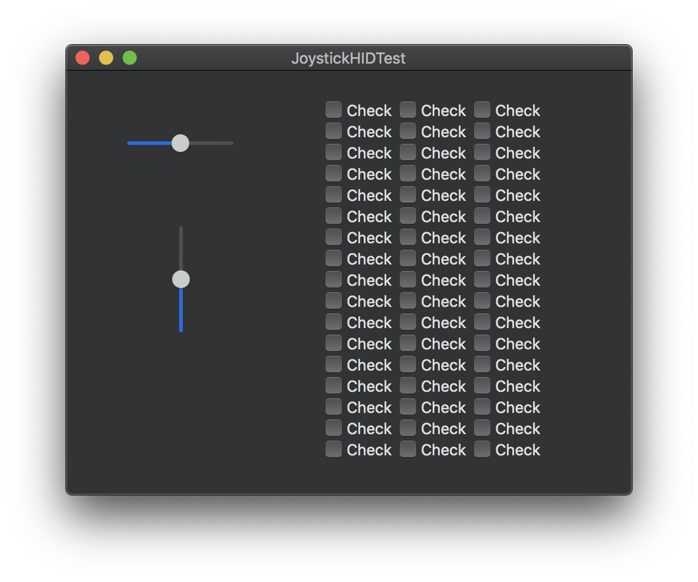

Axes + Hats
Track continuous axis values and hat switch direction with visualized ranges and snap points.
Mac Utility
Inspect joystick orientation, map buttons, and verify every axis with a tidy, no-nonsense macOS helper built on HID.
Identify inputs instantly when calibrating a rig, building a custom controller, or validating a new joystick. The UI keeps the signal loud and clear.
Track continuous axis values and hat switch direction with visualized ranges and snap points.
Press any button and see the exact HID identifier, perfect for binding flight sim or robotics controls.
Lightweight Objective-C app built on IOKit HID for reliable, low-latency polling.
Open the project in Xcode and run locally in minutes.
Clone the repo and open `JoystickHIDTest.xcodeproj`.
Attach your joystick or controller via USB.
Run and watch the axes and buttons light up live.
The 2019 interface still looks clean and functional today.
